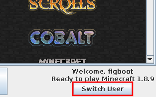

| Manual Contents | Previous OLauncher Manual Next |
|---|---|
Manage Microsoft AccountsThis page will guide you through logging into and out of a Microsoft account within the launcher. This page also describes an alternate method for logging into the launcher, in case you do not have a browser that supports the Microsoft login page. Users on Windows XP or older may be in this situation. Table of ContentsWhat you will NeedTo follow the instructions on this page, you will need the following:
A Note on Microsoft AccountsIf you are not able to log into OLauncher, make sure that your account owns the game by logging in at minecraft.net. Additionally, you must have created a profile by setting your name. If you are still not able to log in and your Microsoft account’s birthday is set to a date less than 18 years in the past, you must be in a family. Log into the LauncherWhen opening the launcher for the first time, you will see a login screen. You may also access this login screen by clicking Switch User, as seen in Figure 1.

Log into the Launcher (alternate method)This method of logging into the launcher is intended for the cases where the first method does not work. This is generally the case when using OLauncher on an old system, where the installed browser is not modern enough to display the Microsoft login page. For these steps, you will need a browser capable of displaying the Microsoft login page, usually a mobile phone or separate computer. As in Log into the launcher, navigate to the login screen.
Log out of the LauncherNote that logging out of the launcher does not necessarily revoke OLauncher’s access to your Microsoft account (although OLauncher does delete your access token when you log out—we promise!). You may revoke OLauncher’s access to your account through Microsoft. |
|
| Previous OLauncher Manual Next |
{kind=link}
{kind=link}
{kind=link}